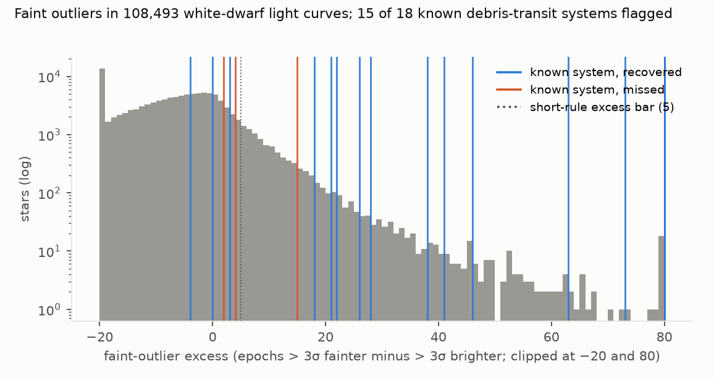
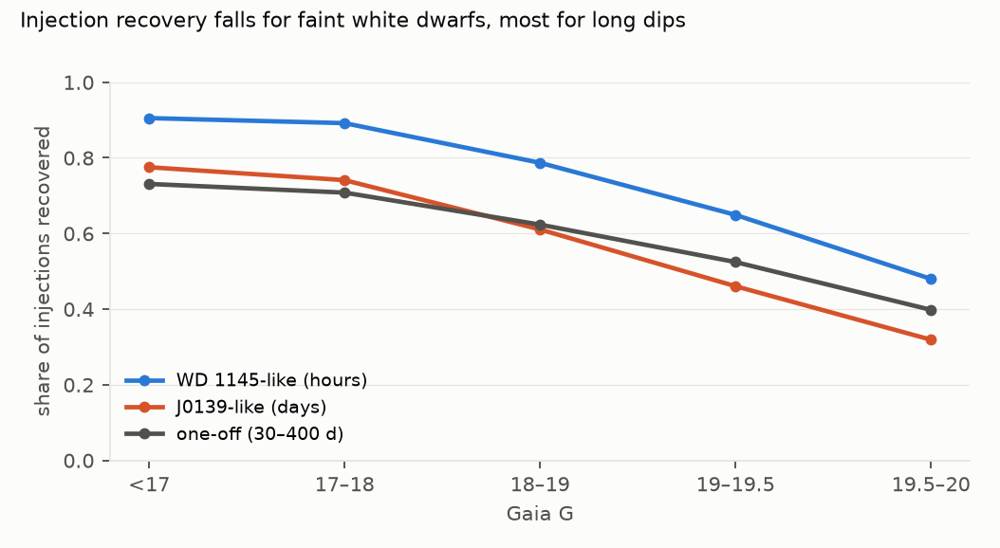
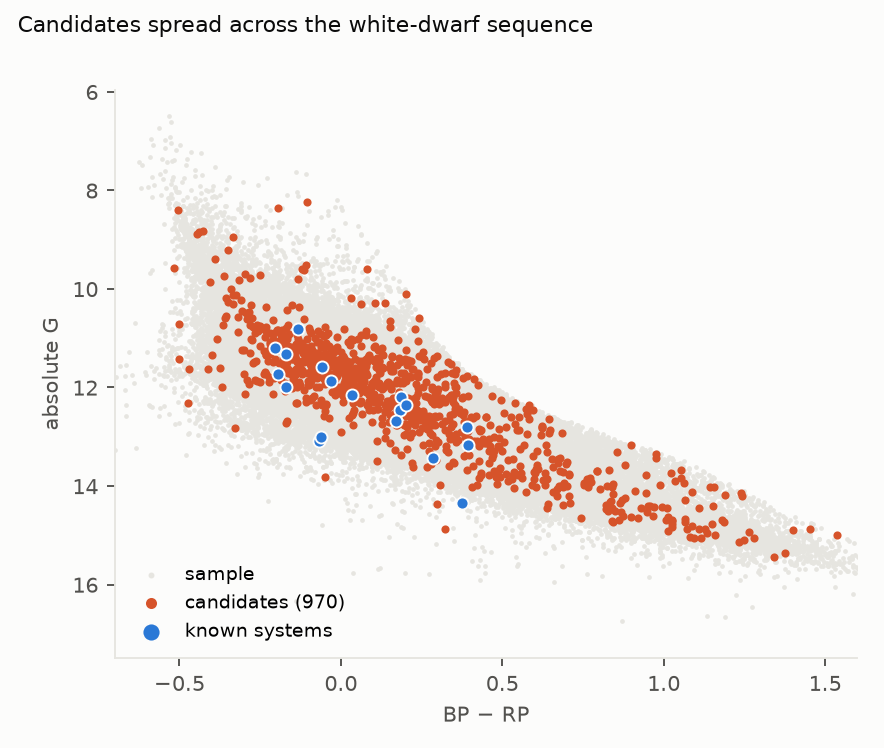

Verdict: H1 Inconclusive. The rate of ZTF-detectable debris transits lies between the rate implied by published systems (2.1 × 10⁻⁴) and the rate with every unvetted candidate counted (1.4 × 10⁻²). The bar of 5 × 10⁻⁴ falls between them. The design made this outcome all but certain: Supported needs at most about 25 flags in total, and Refuted needs about 50 recovered known systems, against 18 in the sample.
-
H1 (the occurrence of ZTF-detectable debris transits, all classes combined, is below 5 × 10⁻⁴): Inconclusive.
- Lower rate, by how well established the recovered systems are (completeness-weighted sample 71,572):
numerator recovered rate (95% Poisson) refereed, confirmed transiters (WD 1145+017, ZTF J0139+5245, ZTF J0328−1219) 3 4.2 × 10⁻⁵ (0.9–12 × 10⁻⁵) plus the Guidry et al. 2021 candidates 5 7.0 × 10⁻⁵ (2.3–16 × 10⁻⁵) all published systems and candidates (preregistered "known systems") 15 2.1 × 10⁻⁴ (1.2–3.5 × 10⁻⁴) Ten of the 15 come from a paper titled "Six New Candidates" or from an unrefereed preprint. So 2.1 × 10⁻⁴ is the rate implied by published systems and candidates, not a floor of real systems. - Upper rate: adding the 970 unexplained candidates gives 1.4 × 10⁻² (1.29–1.46 × 10⁻²). - The i band. The first draft pooled ZTF i-band epochs into eligibility and both rules, against the plan's g and r. This revision uses g and r, as preregistered. With i included: 109,074 eligible, 914 flagged, the same 15 of 18 known systems, and an upper rate of 1.2 × 10⁻². H1 is Inconclusive either way. - The positive controls. 18 of the 20 published systems are in the sample (one is fainter than G = 20, one beyond 500 pc), and the rules flag 15 of them. - SDSS J0107+2107 shows continuous shallow dips. - WD 1054−226 has dips of a few per cent and only 207 epochs. - SBSS 1232+563 was missed because ZTF sampled its defining 2023 dimming sparsely: 29 good epochs over 26 months after April 2023. Few 30-day bins reach the 5-epoch minimum, so only one low bin qualifies, and the rule needs two. A fresh query keeping every ZTF object and flag finds only 35 good epochs after April 2023. - Of the 15 recovered, three are flagged by the short-dip rule alone, six by the long-dip rule alone, and six by both. - Completeness. Injected signals are recovered 65% of the time for WD 1145-like hour-scale dips, 48% for J0139-like day-scale dips and 53% for one-off dimming lasting 30–400 days. Recovery falls for fainter stars (F2). - The candidates are mostly long-dip flags, and mostly systematics. - 1,006 stars are flagged; 21 are CVs in Gaia DR3's variability classification. That leaves 970 candidates besides the 15 known systems. - The long-dip rule is sensitive to its threshold: at 3 standard errors it flags 7,598 stars, at 7 it flags 159. - Calendar test (post hoc). 454 of the 769 long-dip candidates have a low bin in the same ten 30-day windows, and 140 in June 2020 alone. In those windows, 2,000 random unflagged stars are also faint, by a median 0.1–0.7% against −0.02% overall. So the long-dip flags largely track survey-wide photometric trends. - The g/r coincidence check promised as a G4 mitigation barely discriminates. 94% of the candidates' low bins with at least 3 g and 3 r epochs are low in both bands (by more than 2.5% each). - The list is not vetted. It is in
results/tables/candidates.csv(Gaia DR3 source IDs, public facts). - Implied geometry. If a quarter to a half of white dwarfs are metal-polluted, the published-systems rate implies a transit probability × duty cycle of 4 × 10⁻⁴ to 8 × 10⁻⁴ among polluted stars (descriptive).
In plain terms
When a white dwarf, the dense remnant of a star like the Sun, tears apart an asteroid or small planet, the dusty debris can pass in front of it and make it dim. About twenty such stars are known, most found in the last five years in data from the Zwicky Transient Facility (ZTF), a telescope that photographs the northern sky every few nights. How common are they?
We took about 108,000 white dwarfs within 500 parsecs (about 1,600 light-years) that ZTF has observed at least 100 times. We searched each one's brightness record with two simple rules fixed in advance: repeated sudden faint measurements, and months-long stretches of dimming. The rules found 15 of the 18 published debris-transit stars and candidates in our sample. By planting fake dimming events into real light curves, we measured how often the rules would catch such a star: about half to two-thirds of the time.
Counting the published systems and candidates, and correcting for what the search can catch, about 1 in 5,000 of these white dwarfs shows detectable debris transits; counting only the three firmly confirmed ones, about 1 in 24,000. The rules also flagged nearly 1,000 other stars. Most are probably slow drifts in the measurements rather than debris, but until each is checked, the true rate could be anywhere from about 1 in 5,000 to about 1 in 80. So the study cannot say whether the rate is below the 1-in-2,000 bar the lead proposed.
What was asked
The lead (astronomy-ztf-wd-debris-transit-occurrence) asked how common debris transits are among white dwarfs,
predicting an occurrence below 5 × 10⁻⁴ for ZTF-detectable systems.
- Known systems have come from targeted discoveries: WD 1145+017 (Vanderburg et al. 2015), ZTF J0139+5245
(Vanderbosch et al. 2020), ZTF J0328−1219 (Vanderbosch et al. 2021), candidates from a ZTF and Gaia variability
survey (Guidry et al. 2021), WD 1054−226 (Farihi et al. 2022), SBSS 1232+563 (Hermes et al. 2025), six ZTF
candidates (Bhattacharjee et al. 2025) and six long-lived obscuration events (van Roestel et al. 2026, an
unrefereed preprint listing 20 systems in total).
- No completeness-corrected occurrence rate across a volume-limited white-dwarf sample was found. This study
provides bounds with an explicit injection-recovery completeness.
How it was done
- Sample (
code/sample.py): Gentile Fusillo et al. (2021) Gaia EDR3 white dwarfs with P_WD > 0.75, G < 20, declination > −28° and parallax > 2 mas: 121,838 stars. Positions were propagated to epoch 2019.0. - Light curves (
code/fetch_lc.py): the IRSA ZTF light-curve service (DR23) within 2 arcsec, good epochs only (catflags = 0, magerr < 0.25). Per filter, the ZTF object with the most good epochs is kept, and only g and r epochs are used (D2; the first draft also used i).- 116,911 stars returned good g or r epochs (13 queries failed; the rest had no ZTF object or no good epochs).
- 108,493 have at least 100 good g and r epochs and form the eligible sample.
- Rules (
code/detect.py, as preregistered):- Short dips: robust σ (1.4826 × MAD) per filter; faint and bright 3σ outliers pooled over g and r. A star is flagged if faint − bright ≥ 5, the one-sided binomial p < 10⁻⁶, and the faint epochs fall on at least 3 nights.
- Long dips: flux relative to each filter's median, pooled into 30-day bins of at least 5 epochs. A star is flagged if at least 2 bins sit more than 5 standard errors and at least 5% below the global median.
- Known variables removed: Gaia DR3
vari_classifier_resultclasses ECL, CV, RS and SOLAR_LIKE (21 CVs among the flagged stars). Name lists of known CVs and AM CVn systems were not obtained. - Positive controls (
results/tables/known_systems.csv): the 20 known systems, compiled from the papers' tables by a separate agent session that never saw the light curves, and committed before detection. - Completeness: 5,000 random eligible stars that were not flagged × 3 signal classes × 10 injections, with parameters drawn as in the plan. Box-shaped dips were applied as flux multipliers, with errors scaled by (flux)^−½; injected epochs fainter than 21.0 mag were dropped as non-detections. These details were fixed in the code before any detection run. Completeness C_k is tabulated by G and number of epochs and assigned to every eligible star.
- Rates: N / Σ C_k with Poisson (Garwood) intervals; the combined rate takes each star's best class.
Results (results/figures/F1_excess.png, F2_completeness.png, F3_cmd.png)


| class | Σ completeness | known recovered | lower rate (95%) | upper rate (95%) |
|---|---|---|---|---|
| WD 1145-like (hours) | 71,399 | 4 | 5.6 × 10⁻⁵ (1.5–14) × 10⁻⁵ | 1.4 × 10⁻² |
| J0139-like (days) | 52,989 | 5 | 9.4 × 10⁻⁵ (3.1–22) × 10⁻⁵ | 1.8 × 10⁻² |
| one-off dimming | 57,521 | 6 | 1.0 × 10⁻⁴ (3.8–23) × 10⁻⁵ | 1.7 × 10⁻² |
| combined (best class per star) | 71,572 | 15 | 2.1 × 10⁻⁴ (1.2–3.5) × 10⁻⁴ | 1.4 × 10⁻² (1.29–1.46) × 10⁻² |
Known systems are assigned to a class by the dip type their papers describe; the upper rates add all 970 candidates
to every class. The first draft's rates with the i band pooled in are kept as results/tables/withzi_*.
- By distance (known recovered / candidates / Σ completeness): ≤ 100 pc 2 / 102 / 7,717; 100–200 pc 7 / 231 / 21,188; 200–500 pc 6 / 637 / 42,667.
- Threshold variants (secondary): the short-dip rule flags 326 stars at 2.5σ and 154 at 3.5σ; the long-dip rule flags 7,598 at 3 standard errors and 159 at 7.
- Faint-outlier asymmetry. Most stars (77%) have more bright than faint outliers (median excess −6). Near ZTF's detection limit, faint epochs go missing while bright ones are kept, which works against the short-dip rule for faint stars.




What this does and does not show
- Published systems and candidates imply about 2 × 10⁻⁴; confirmed transiters alone about 4 × 10⁻⁵. That is a completeness-corrected rate of ZTF-detectable debris transits among white dwarfs within 500 pc. Most known systems (all but WD 1145+017 and WD 1054−226) were themselves found in ZTF data, and two-thirds are candidates or preprint systems, so the figure reflects what has been reported, not what is established.
- The ceiling is set by unvetted flags, not by debris. Without vetting, the 970 candidates make the upper bound 66 times the published-systems rate. Most are long-dip flags on faint stars, a pattern that systematics produce as easily as dust.
- Completeness is moderate and falls with magnitude. Shallow or sporadic dimming, like the three missed known systems, is often missed.
- Not shown:
- Vetting of the candidates (follow-up photometry, spectroscopy, or inspection of neighbours and image artefacts).
- Systems fainter than G = 20, beyond 500 pc, or south of −28°.
- Transits too shallow or too rare for ZTF's cadence, which these rates do not count.
- Physical rates. Geometry and duty cycle are not separated; the polluted-star figure is descriptive.
Process and deviations
- Preregistration:
plan.md, committed before any light curve was fetched. The detection, injection and occurrence rules were committed before detection was run; the positive-control list was committed after the code and before detection. - Deviations (
deviations.md): D1, the float-rounded Gaia IDs found after the first detection pass and fixed before any result was written up; implementation details of light-curve selection and injections. - Quality gates: G1 (plan section 3), G2 (coverage counts above and in
results/tables/coverage.json), G5 (review/overclaim_check.md) and G6 (results/attribution_ledger.csv). - Independent review: queued (Fable), per the lab's pacing rule.
Reproducing it
- Download the Gentile Fusillo et al. (2021) catalogue FITS into
data/raw_cat/. code/sample.py, thencode/fetch_lc.py 16(days; IRSA serves one star per query).code/fix_ids.py(only needed for light curves fetched before the ID fix).code/detect.py detect,code/variables.py,code/detect.py inject,code/detect.py occurrence.code/figures.py.